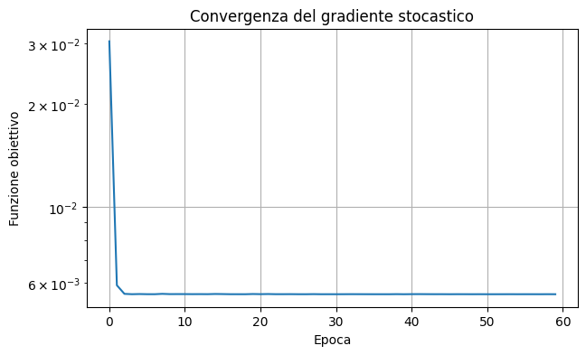

Gradiente stocastico#
Motivazione, algoritmo e implementazione#
Gradiente stocastico: motivazione#
In molti problemi di machine learning la funzione obiettivo è la media degli errori calcolati sui dati di addestramento:
dove \(f_i(x)\) misura l’errore del modello sul dato \(i\).
Il metodo del gradiente classico calcola a ogni iterazione
esaminando l’intero dataset prima di aggiornare i parametri. Quando \(N\) è molto grande, questa operazione può essere costosa e produce aggiornamenti poco frequenti.
L’idea del gradiente stocastico è usare una stima economica del gradiente, ottenuta da uno o pochi dati, e aggiornare più frequentemente i parametri.
Dal gradiente completo al gradiente stocastico#
Scelto casualmente un indice \(i_k\in\{1,\ldots,N\}\), si pone
e si aggiorna l’iterato mediante
dove \(\alpha_k>0\) è la lunghezza del passo, detta spesso learning rate.
Se \(i_k\) è scelto uniformemente, allora
Quindi \(g_k\) è uno stimatore non distorto del gradiente completo. Possiamo scrivere
dove \(\varepsilon_k\) è l’errore casuale dovuto al campionamento.
Mini-batch gradient descent#
Nella pratica si utilizza un sottoinsieme \(B_k\) degli indici, chiamato mini-batch. Si calcola
e si applica l’aggiornamento
La dimensione del mini-batch determina un compromesso:
\(|B_k|=1\): gradiente stocastico puro, economico ma rumoroso;
\(1<|B_k|<N\): minore variabilità e calcolo parallelizzabile;
\(|B_k|=N\): metodo del gradiente completo.
Una visita completa di tutti gli \(N\) dati prende il nome di epoca (epoch).
Algoritmo del gradiente stocastico mini-batch#
Scegliere il punto iniziale x_0
per epoch = 0, 1, ..., numero_epoche - 1:
mescolare casualmente gli indici dei dati
suddividere gli indici in mini-batch B_k
per ogni mini-batch B_k:
g_k = media dei gradienti sul mini-batch
x_{k+1} = x_k - alpha_k g_k
Mescolare i dati all’inizio di ogni epoca evita che l’ordine degli esempi introduca un comportamento sistematico indesiderato.
Learning rate e comportamento del metodo#
Con un learning rate costante,
il metodo può avanzare rapidamente, ma vicino alla soluzione tende a oscillare a causa del rumore stocastico.
Una scelta teorica classica utilizza passi decrescenti che soddisfano
Un esempio è \(\alpha_k=\alpha_0/(k+1)\). Nelle applicazioni si utilizzano anche riduzioni a tratti o altri learning-rate schedules.
Poiché il gradiente completo può essere costoso, si controllano spesso:
il numero di epoche;
la media della funzione obiettivo;
l’errore su un insieme di validazione.
Vantaggi e limiti#
Vantaggi#
Ogni aggiornamento ha costo ridotto.
È adatto a dataset molto grandi.
Può essere usato quando i dati arrivano progressivamente.
Il rumore può aiutare a non arrestarsi in regioni quasi piatte o vicino ad alcuni punti di sella.
Limiti#
La funzione obiettivo non necessariamente diminuisce a ogni iterazione.
Gli iterati seguono una traiettoria oscillante.
La scelta del learning rate è delicata.
La convergenza è generalmente meno regolare di quella del gradiente completo.
Implementazione: problema dei minimi quadrati#
Consideriamo
Per un mini-batch \((X_B,y_B)\), il gradiente approssimato è
La cella seguente implementa il metodo SGD mini-batch e registra il valore della funzione obiettivo completa alla fine di ogni epoca.
import numpy as np
def sgd_least_squares(
X,
y,
w0=None,
epochs=100,
batch_size=32,
alpha0=0.1,
decay=0.0,
seed=0,
):
"""SGD mini-batch per un problema lineare ai minimi quadrati."""
X = np.asarray(X, dtype=float)
y = np.asarray(y, dtype=float)
if X.ndim != 2 or y.ndim != 1 or X.shape[0] != y.size:
raise ValueError("Le dimensioni di X e y non sono compatibili")
if epochs <= 0 or batch_size <= 0 or alpha0 <= 0 or decay < 0:
raise ValueError("I parametri del metodo devono essere positivi")
N, n = X.shape
w = np.zeros(n) if w0 is None else np.asarray(w0, dtype=float).copy()
rng = np.random.default_rng(seed)
loss_history = []
iteration = 0
for epoch in range(epochs):
indices = rng.permutation(N)
for start in range(0, N, batch_size):
batch_indices = indices[start:start + batch_size]
X_batch = X[batch_indices]
y_batch = y[batch_indices]
residual = X_batch @ w - y_batch
gradient = X_batch.T @ residual / len(batch_indices)
alpha = alpha0 / (1.0 + decay * iteration)
w = w - alpha * gradient
iteration += 1
residual = X @ w - y
loss_history.append(0.5 * np.mean(residual**2))
return w, np.asarray(loss_history)
Esempio numerico#
Generiamo dati secondo il modello lineare
dove \(\eta_i\) rappresenta il rumore. Applichiamo SGD e confrontiamo i parametri stimati con quelli utilizzati per generare i dati.
import matplotlib.pyplot as plt
rng = np.random.default_rng(1)
N = 500
z = rng.normal(size=N)
X = np.column_stack((np.ones(N), z))
w_true = np.array([0.5, 2.0])
y = X @ w_true + 0.1 * rng.normal(size=N)
w_sgd, history = sgd_least_squares(
X,
y,
epochs=60,
batch_size=20,
alpha0=0.1,
decay=1e-3,
seed=2,
)
print("Parametri esatti: ", w_true)
print("Parametri stimati:", w_sgd)
plt.figure(figsize=(7, 4))
plt.semilogy(history)
plt.xlabel("Epoca")
plt.ylabel("Funzione obiettivo")
plt.title("Convergenza del gradiente stocastico")
plt.grid(True)
plt.show()
Parametri esatti: [0.5 2. ]
Parametri stimati: [0.49283789 1.99954161]
